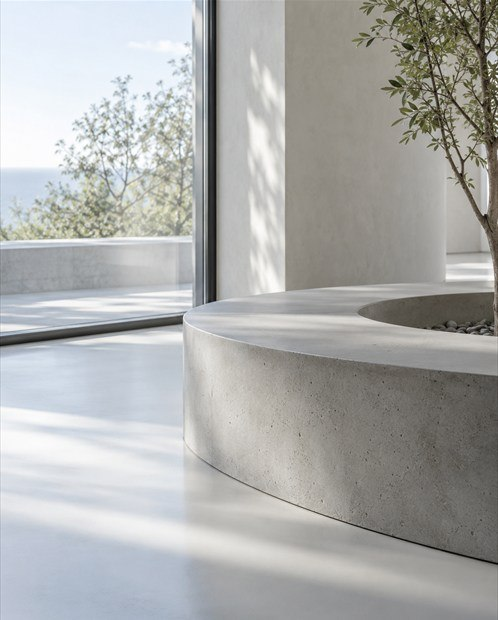
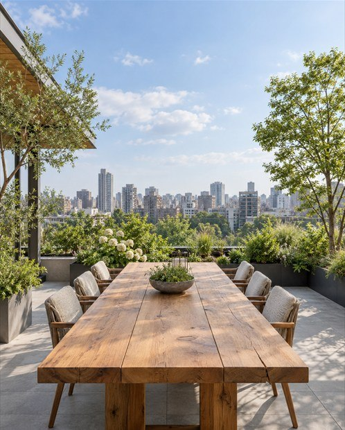

Frame the ROOM,
Welcome the AUDIENCE,
Show WORK.
작품 앞에 서는 일은 보는 데서 끝나지 않습니다. 머물고 대화한 시간까지 관람이 됩니다.
갤러리 노바르크는 전시장과 사람, 작품을 한 흐름으로 연결해 예술을 몸으로 느끼는 시간으로
이어집니다. 관람 뒤 떠오른 생각도 전시 경험에 포함됩니다.
성수동의 탁 트인 자리에 있는 노바르크에서 작가는 전시 동선을 정하고 자신의 주제를
직접 구성하는
전시를 직접 구성하는 장소입니다.
창밖 풍경과 잠시 쉬는 자리까지 전시의 구성 안에 들어옵니다.
관람객은 작품과 관계를 맺고, 작가는 이 공간에서
자신의 언어를
제약 없이 보여 줄 수 있습니다.
평면 작업부터 입체·영상·관객 참여형 작업까지—
형식의 경계를 두지 않고 새로운 시도를 받아들이는
노바르크는 신진 작가를 위한
열린
전시장입니다.
계획한 전시를 세부까지 구현할 수 있는 곳,
갤러리 노바르크에서 다음 전시를 기다립니다.
성수동 중심부의 높은 층에 자리한
갤러리 노바르크는,
연무장길과 서울숲길 사이, 성수의 두 감성을
사이에 자리한 전시 공간입니다.
서울숲역에서 골목을 따라 잠시 걷다 보면, 거리 위쪽에 자리한
노바르크와
갤러리를 발견하게 됩니다.
갤러리에 들어서는 순간부터 관람이 시작됩니다.
서울특별시 강남구 테헤란로 123, 6층·7층
View more

서울숲을 바라보는 모던 갤러리
성수동 위층, 예술이 머무는
도시가 보이는 곳